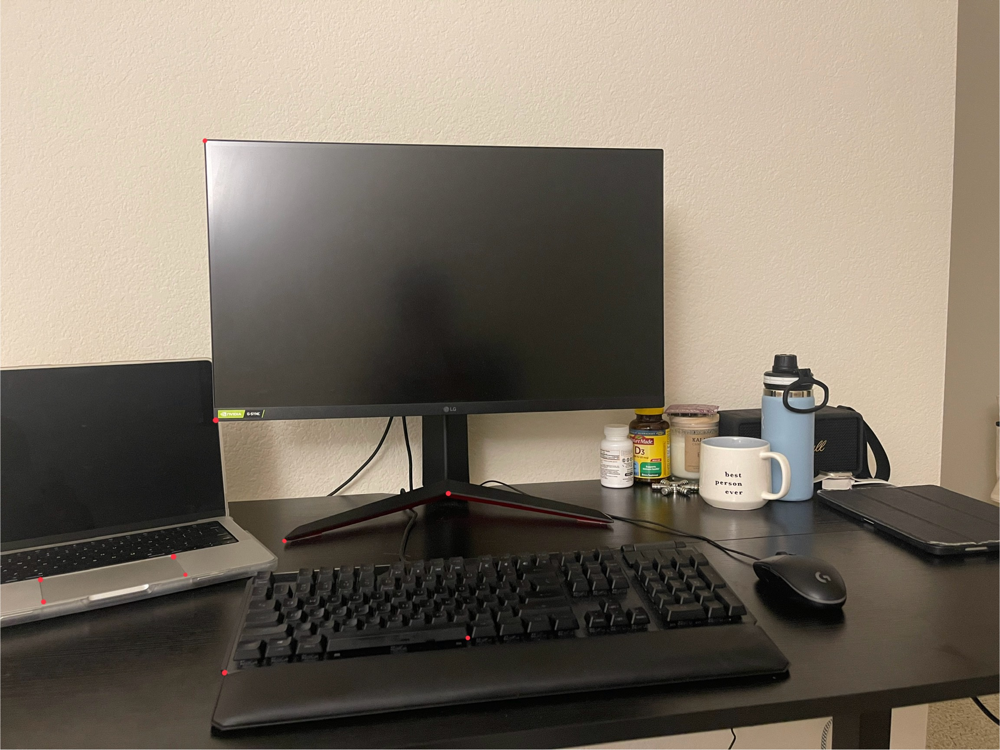

Overview
This project implements point picking, normalized DLT homography recovery, inverse warping (nearest & bilinear), planar rectification, and feather-blended mosaics. Below I show a full walk-through using the pair of images I took.
TASK A.1 · Shoot the Pictures
Two overlapping photos were captured by rotating the camera around a fixed center of projection so their relation is a projective transform.


Tip: aim for 30–50% overlap and avoid moving objects; parallax from large translations can cause ghosting.
TASK A.2 · Recover Homographies
Correspondences
I manually clicked 11 pairs of features (corners/edges). Here is a visualization of the correspondences I used.

System of Equations (DLT)
For a correspondence \((x,y)\mapsto(x',y')\), two rows are added to \(A\mathbf{h}=0\):
\[ \begin{bmatrix} -x & -y & -1 & 0 & 0 & 0 & x x' & y x' & x' \\ 0 & 0 & 0 & -x & -y & -1 & x y' & y y' & y' \end{bmatrix} \]
I use normalized DLT (Hartley): both point sets are translated to zero mean and scaled so mean distance is \(\sqrt 2\). Solve via SVD (last right singular vector), then de-normalize and scale to \(H_{33}=1\).
A matrix (first 8 rows of 22)
| a1 | a2 | a3 | a4 | a5 | a6 | a7 | a8 | a9 |
|---|---|---|---|---|---|---|---|---|
| 1.0673 | 1.8994 | -1.0000 | 0.0000 | 0.0000 | 0.0000 | 1.3861 | 2.4668 | -1.2987 |
| 0.0000 | 0.0000 | 0.0000 | 1.0673 | 1.8994 | -1.0000 | 2.1208 | 3.7743 | -1.9871 |
| 0.8760 | 1.5845 | -1.0000 | 0.0000 | 0.0000 | 0.0000 | 0.9078 | 1.6421 | -1.0363 |
| 0.0000 | 0.0000 | 0.0000 | 0.8760 | 1.5845 | -1.0000 | 1.4222 | 2.5723 | -1.6234 |
| 0.6707 | -0.8298 | -1.0000 | 0.0000 | 0.0000 | 0.0000 | 0.3632 | -0.4493 | -0.5415 |
| 0.0000 | 0.0000 | 0.0000 | 0.6707 | -0.8298 | -1.0000 | -0.6139 | 0.7594 | 0.9152 |
| 0.1412 | 1.3722 | -1.0000 | 0.0000 | 0.0000 | 0.0000 | 0.0310 | 0.3009 | -0.2193 |
| 0.0000 | 0.0000 | 0.0000 | 0.1412 | 1.3722 | -1.0000 | 0.1883 | 1.8298 | -1.3334 |
Show full A (22×9)
[[ 1.06728967 1.89940663 -1. 0. 0. 0.
1.38610093 2.46678046 -1.29871109]
[ 0. 0. 0. 1.06728967 1.89940663 -1.
2.12079919 3.77428936 -1.98708865]
[ 0.87601304 1.58449999 -1. 0. 0. 0.
0.90784081 1.64206888 -1.03633253]
[ 0. 0. 0. 0.87601304 1.58449999 -1.
1.42215564 2.57234251 -1.62344117]
[ 0.67074056 -0.82978432 -1. 0. 0. 0.
0.36320318 -0.44932471 -0.54149578]
[ 0. 0. 0. 0.67074056 -0.82978432 -1.
-0.61385267 0.75940737 0.91518645]
[ 0.14123086 1.37222958 -1. 0. 0. 0.
0.03096861 0.3008977 -0.2192765 ]
[ 0. 0. 0. 0.14123086 1.37222958 -1.
0.18832342 1.82979105 -1.33344382]
[-0.43493167 0.13826204 -1. 0. 0. 0.
0.19692874 -0.06260241 0.45278086]
[ 0. 0. 0. -0.43493167 0.13826204 -1.
-0.05041521 0.01602668 -0.11591525]
[ 0.78737265 -1.62288255 -1. 0. 0. 0.
0.46622716 -0.96095783 -0.59213024]
[ 0. 0. 0. 0.78737265 -1.62288255 -1.
-1.38385445 2.85231299 1.75755972]
[-0.37428299 -1.24732721 -1. 0. 0. 0.
0.19875703 0.6623733 0.53103411]
[ 0. 0. 0. -0.37428299 -1.24732721 -1.
0.44677261 1.48890452 1.19367597]
[-0.60754717 1.36523165 -1. 0. 0. 0.
0.298857 -0.67156767 0.49190749]
[ 0. 0. 0. -0.60754717 1.36523165 -1.
-0.76818072 1.72619457 -1.26439683]
[-1.85551056 -1.34529817 -1. 0. 0. 0.
3.17614723 2.30279749 1.71173762]
[ 0. 0. 0. -1.85551056 -1.34529817 -1.
2.05259631 1.48819097 1.10621646]
[-0.52823735 -0.10899799 -1. 0. 0. 0.
0.29996442 0.06189551 0.56785918]
[ 0. 0. 0. -0.52823735 -0.10899799 -1.
0.06034656 0.01245208 0.11424138]
[ 0.25786295 -1.20533966 -1. 0. 0. 0.
0.01737303 -0.0812075 -0.06737312]
[ 0. 0. 0. 0.25786295 -1.20533966 -1.
-0.3190811 1.4914942 1.23740573]]Recovered Homography \(H\) (IMG_2963→IMG_2964)
| 3.40187491 | 0.30172659 | -7971.77295389 |
| 0.63896041 | 2.83108044 | -1924.95290764 |
| 0.00058304 | 0.00001624 | 1.00000000 |
Reprojection Error
RMSE: 2.10 px
Per-point details
| # | (x,y) in IMG_2963 | GT (x',y') in IMG_2964 | pred (x',y') | error (px) |
|---|---|---|---|---|
| 1 | 2655.0,429.0 | 465.0,388.0 | 465.63,385.93 | 2.17 |
| 2 | 2737.0,564.0 | 579.0,546.0 | 579.41,545.35 | 0.77 |
| 3 | 2825.0,1599.0 | 794.0,1649.0 | 793.47,1648.67 | 0.63 |
| 4 | 3052.0,655.0 | 934.0,672.0 | 934.88,673.64 | 1.86 |
| 5 | 3299.0,1184.0 | 1226.0,1201.0 | 1226.18,1201.28 | 0.33 |
| 6 | 2775.0,1939.0 | 772.0,2015.0 | 775.06,2014.63 | 3.08 |
| 7 | 3273.0,1778.0 | 1260.0,1770.0 | 1259.39,1770.42 | 0.74 |
| 8 | 3373.0,658.0 | 1243.0,702.0 | 1243.18,703.03 | 1.04 |
| 9 | 3908.0,1820.0 | 1773.0,1732.0 | 1775.01,1730.51 | 2.51 |
| 10 | 3339.0,1290.0 | 1276.0,1301.0 | 1272.46,1300.87 | 3.54 |
| 11 | 3002.0,1760.0 | 1000.0,1789.0 | 997.41,1790.62 | 3.05 |
TASK A.3 · Warp the Images
We implement inverse warping with two interpolation schemes:
- Nearest Neighbor — rounds coordinates to the nearest pixel; fast but produces jaggies on edges.
- Bilinear — samples the four neighbors and averages by area weights; slower but much smoother.
Rectification Example
Using a single photo containing a planar rectangle, I clicked the four corners in the order top-left → top-right → bottom-right → bottom-left and mapped them to a canonical rectangle of size chosen to match the object's aspect ratio. This yields a fronto-parallel, metric-correct view.
Nearest is typically ~3× faster; bilinear gives visibly cleaner results on slanted lines and text.


TASK A.4 · Blend the Images into a Mosaic
I warp IMG_2964 → IMG_2963 and feather-blend using a soft edge alpha (distance-transform ramp) to suppress seams.
Reproduce

Feather Blending
Each image has a support mask; I compute a smooth alpha by normalizing interior vs. exterior distance transforms, then take a weighted average per pixel. This fades seams while preserving detail where only one image contributes.